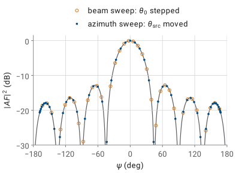
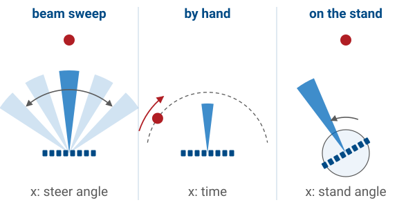
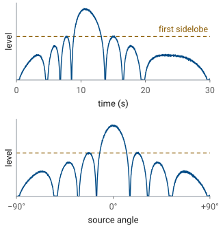
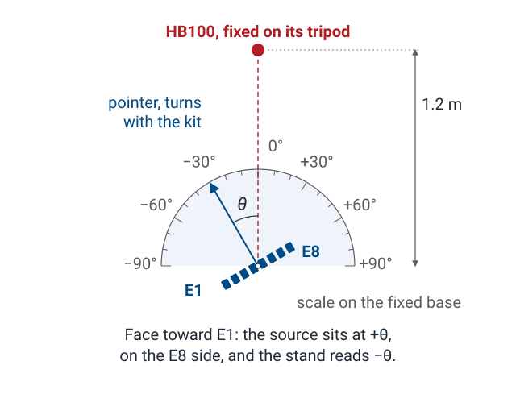
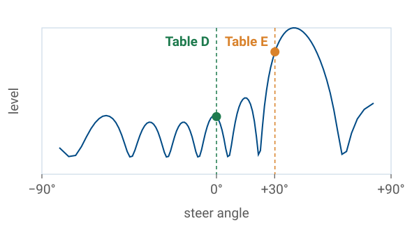
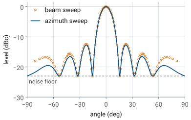
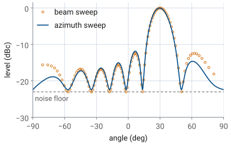
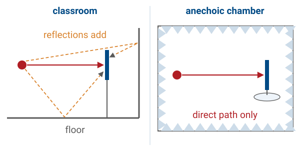

L21 - Antenna Pattern#
Antenna Pattern
The kit builds its pattern plot from many beams. Today we measure one beam directly and compare the two.
Lesson 21 · Antennas, Phased Arrays, and Radar Systems · Dr. Neil Rogers
Printing
To print the slides, switch to present mode and print: one slide a sheet, with room for notes. Print from read mode for the whole lesson.
Learning Objectives
- I can distinguish between array factor and true antenna pattern and account for element pattern effects.
Every pattern you have read since the L18 Lab came from the PHASER’s Rectangular plot, the beam sweep: the kit holds the HB100 still, steps the beam past it, and plots the level it receives at each commanded angle, so each point comes from a different beam. An antenna range measures a pattern the other way. It holds one beam still and moves the source around it in azimuth. Today we take that azimuth sweep with the kit’s Signal vs Time mode and compare it with the beam sweep. The two agree on the main lobe and the first sidelobes, and they part farther out, where each patch’s own pattern, the noise floor, and the room decide the level.
The Rectangular Plot
The HB100 stays put while the kit steps the element-to-element phase, 2.8125° at a time.
Each step makes a different beam; the plot puts the level received through it at that beam’s commanded angle.
One trace is 162 steps.
You built this trace step by step in Lesson 18 (”The Beam-Sweep Trace”). With Use Bits on, as in every lab preset, the kit adds one phase-shifter LSB, 2.8125°, to the element-to-element phase, writes that ramp to the eight channels, reads the peak of the FFT, and plots the reading at the angle the ramp steers to. This lesson works its examples at 10.0 GHz, where \(\lambda = c/f = 30.0\ \text{mm}\), \(d/\lambda = 14/30.0 = 0.467\), and \(kd = 360^\circ\ d/\lambda = 168.0^\circ\), by the steps of Lesson 18’s ”The Phaser Kit (CN0566)”. One step moves \(\sin\theta_0\) by \(2.8125^\circ/168.0^\circ = 0.0167\), which is 0.96° of angle near broadside and 1.11° at 30°. Of the 162 steps, 119 fall inside ±81°; the rest ask for more phase than any real angle needs and plot at ±90°. Lesson 20 shows what that grid and the noise floor do to the readings (”Reading a Measured Sweep”).
Beam Sweep, Step by Step
This is the beam sweep the kit runs, slowed down. Press step to add one phase LSB at a time and watch the left panel: the beam swings past the HB100, and the inset adds the eight element signals tip to tail. Away from the source the element signals arrive out of phase and their sum is small, so the point lands in a sidelobe or near the noise floor; as the beam reaches the source the signals line up and the trace rises to its peak. Each point on the right panel comes from the beam on the left at that moment, never from one beam held still.
Why the Beam Sweep Traces a Pattern
\(\vert AF\vert\) depends only on \(\psi\), and it is even in \(\psi\).
Stepping \(\theta_0\) or moving \(\theta_\text{src}\) visits the same curve.

Lesson 18 (“The Steered Pattern”) showed that steering replaces the array-factor argument with
where \(\theta_\text{src}\) is the direction the signal arrives from and \(\theta_0\) is the angle the phase ramp steers to. The beam sweep holds \(\theta_\text{src}\) and steps \(\theta_0\); the azimuth sweep holds \(\theta_0\) and moves \(\theta_\text{src}\). Both run \(\psi\) through the same values, and \(\vert AF\vert\) is the same for \(\psi\) and \(-\psi\), so both trace the same curve. That is why a trace built from 162 different beams looks like the pattern of one beam.
The two differ only in what the array factor leaves out. The azimuth sweep carries the source across each patch’s own pattern, so it records the product of the element pattern and the array factor that Lesson 16 derived (”From Two Patterns to One”). The beam sweep keeps the source in one direction, so each patch receives the same level at every step and the element pattern is a single constant.
The Antenna-Range Method
Beam sweep |
Azimuth sweep, by hand |
Azimuth sweep, on the stand |
|
|---|---|---|---|
x-axis |
steer angle |
elapsed time |
stand angle |
Measures |
array factor |
element \(\times\) array |
element \(\times\) array |
Distance |
fixed |
your arm |
fixed |

Lesson 9 described how an antenna range measures a pattern (”Two Measurements, One Question”). The antenna under test sits on a turntable with its beam fixed, a source stands at a fixed distance, and the turntable records the received level against the angle between the two. Every reading comes from the same beam, and each one carries a physical angle. The L21 Lab takes this azimuth sweep twice. By hand, you carry the HB100 around the kit on a taped arc; the kit plots the level against elapsed time, which maps to azimuth only at a steady pace, and the level holds only while you hold the radius. On the stand, the HB100 stays on its tripod and you turn the kit in front of it; every reading carries an angle off the stand’s scale, and the distance never changes.
Signal vs Time Mode
The kit holds the beam at the Steer Angle and plots the peak level against time.
You carry the HB100 from −90° to +90° on a 1.2 m arc.
The trace is one beam’s pattern across azimuth.
The Antenna Pattern preset sets Mode to Signal vs Time. In that mode the kit stops stepping the beam: it holds every element at the phase for the Steer Angle you set, and the Tracking tab plots the FFT peak against elapsed time. As you carry the HB100 around the arc, the level at each instant is the held beam’s response in the direction of the HB100 at that instant. This is the measurement in ADI’s PHASER workshop, “Measuring the Actual Antenna Pattern.”
Azimuth Sweep Simulator
The widget runs the azimuth sweep in simulation. Choose a steer angle and a speed profile, then watch the trace paint as the source moves around the arc. Run it once with the uniform profile and once with the hand-like profile, and compare the readouts: the lobe spacing changes and the lobe levels do not. The simulation holds the radius fixed; a hand-carried source drifts by a few centimeters, which moves the level (next frame).
The Time Axis
At a steady pace, time on the plot maps directly to azimuth.
An uneven pace stretches or squeezes a lobe in time; its level stays the same if the lobe gets several updates.

The Signal vs Time plot puts time on its x-axis, and at a steady pace time and azimuth are the same axis with a fixed scale factor: the 180° arc divided by the time the sweep takes. The figure shows a 30 s sweep.
The pace sets how long the source spends in each lobe, and the plot’s update rate, which its title shows, sets how many readings land there. A lobe crossed in a fraction of a second gets only a few readings, and its peak can fall between them. Worked for a 30 s sweep at 10.0 GHz, where Lesson 20 found the half-power width to be 13.7° and the first sidelobe runs from the first null at 15.5° to the second at 32.4°:
A kit that updates more slowly than that puts fewer than five readings on the first sidelobe, and the fix is a slower sweep.
A hand is not perfectly steady. Moving slowly through a lobe draws it wider on the plot and hurrying draws it narrower, but the level at each instant is still the pattern in the source’s direction, so the lobe levels come through. The angles do not. Convert time to angle at the average pace, and a hand 20% fast through the main lobe spends \(1/1.2\) of the steady time in it, while one 20% slow spends \(1/0.8\) of it, so the conversion reports
for a true 13.7° beam. For angles read to a degree or two, the L21 Lab turns the kit on its stand and reads the stand’s scale.
A drift in the arc’s radius changes the level. Received power falls as \(1/r^2\), so drifting 5 cm in or out at 1.2 m changes a reading by
and a larger drift moves it more; Part 1 sizes the lab’s.
Turning the kit on its stand holds the distance fixed, which is why the L21 Lab does both.
Turning the Kit on Its Stand
The HB100 stays on its tripod, 1.2 m out; the stand turns the kit about the array’s center.
Facing the patches, E1 is on the right. Turning the face toward E1 puts the source at \(+\theta\).
The stand’s scale reads \(-\theta\).

Turning the kit in front of a fixed source records the same pattern as carrying the source around a fixed kit, because only the angle between the array normal and the source matters. The setup changes in three ways: the distance stays fixed, so you can compare levels from one reading to the next; the HB100 stays aimed at the array without effort; and you take each reading at an angle you read off the stand’s scale, with a click every 5°.
A stand reading of −30 means the source is at +30°. Lesson 18 put \(+\theta\) on the E8 end of the array, and turning the kit’s face toward E1, as seen from the source, puts the source on that side. The scale sits on the fixed base and counts clockwise as seen from above, while that turn is counterclockwise, so the pointer reads the opposite sign. Part 2 starts by confirming the sign with a beam sweep, whose Angle readout, set to Peak, reads the source’s angle (Run 1 of the L21 Lab).
The stand puts the array’s center on its turning axis, so the distance stays fixed as you turn. The scale reads to about ±2°, which is fine for a lobe about 15° wide.
On the stand the kit keeps sweeping its beam, and one pass reads two held beams at once. Each point of a beam sweep is the beam held at that steer angle for an instant, so at each stand position the sample at 0° steer is the beam held at 0°, and the sample nearest 30° is the beam held at 30°, both seeing the source at the angle the stand sets. Read those two samples at every mark and you have taken two azimuth sweeps in one pass (Run 3 of the L21 Lab).

Levels in dBc
dBFS: level relative to the receiver’s full scale, which the kit plots.
dBc: level relative to the trace’s own main-lobe peak.
The subtraction removes Rx Gain, distance, and source power.
The kit reports every level in dBFS, decibels relative to the full scale of the receiver’s analog-to-digital converter. A dBFS reading depends on everything between the HB100 and the converter: the Rx Gain setting, the distance, the HB100’s battery, and the direction of the source. Two traces taken at different gains or distances therefore sit at different dBFS levels even when the patterns are identical.
dBc removes that. Subtract the main-lobe peak of the same trace from every reading, and each level becomes a ratio to the peak: a first sidelobe at −27.9 dBFS under a main lobe at −14.6 dBFS reads \(-27.9 - (-14.6) = -13.3\) dBc. Everything common to the two readings cancels, which is what lets us lay a beam sweep and an azimuth sweep on the same axes. The lesson and the L21 Lab quote every lobe level in dBc.
Beam Sweep and Azimuth Sweep at Broadside
The main lobe and first sidelobes match: about −13 dBc on both.
The nulls drop to the noise floor, about −23 dBc, on both.
Past ±50° the azimuth sweep reads lower.

The figure predicts both traces for a beam at broadside, at 10.0 GHz. The beam sweep holds the HB100 at boresight and steps the beam; the azimuth sweep holds the beam at 0° and moves the HB100. Out to the first sidelobes, at ±22.6°, the two lie on top of each other, and both put the first sidelobes about 13 dB below the peak. That comparison is the one the L21 Lab asks for, because the main lobe and first sidelobes stand well above the noise floor and the room’s reflections.
The nulls fall where Lesson 20’s ”Null Locations” puts them, \(\sin\theta_m = \pm m\lambda/(Nd)\): at 10.0 GHz, \(\lambda/(Nd) = 0.268\), which puts them at ±15.5°, ±32.4°, and ±53.5°.
Run 3 of the L21 Lab reads the stand at its 10° marks, and a mark reads at the noise floor only if it sits within a degree or two of a null, because the level climbs steeply on either side of one. To find those marks, subtract each null angle from the nearest mark. At 10.0 GHz the first null, at 15.5°, is 4.5° from the 20° mark, and there the array factor is already back up to −14.0 dB, so no mark sees that null. The same steepness keeps the marks off the sidelobe peaks: the first sidelobe peaks at 22.7°, and the 20° mark, 2.7° away, reads 1.2 dB below it. A lobe peak lands on a mark only by chance, which is why Run 3 has you turn the kit slowly through each lobe for its highest reading.
Every null drops to the noise floor, about 23 dB below the peak, which the L20 Lab measured. The floor also lifts the outer sidelobes, which the array factor puts at −16 to −18 dB, by a decibel or two on both traces. The difference between the traces near ±67°, about 3 dB, comes from each patch’s own pattern. A patch over a ground plane radiates nothing behind the board and less and less toward the horizon; the course models it as the ideal element of “Gain of the Course Array” below, whose power falls as \(\cos\theta\), 3.9 dB down at 66°. The azimuth sweep moves the HB100 out there, and the beam sweep never does. A real patch falls off faster than the ideal element, so expect the outer lobes of your azimuth sweep to read lower still. At the first sidelobes the patch pattern changes the level by less than half a decibel.
Beam Sweep and Azimuth Sweep at 30°
Both put the nulls at 13.4° and 50.2°: the lobe is wider outside.
The outer first sidelobe reads about 2 dB lower on the azimuth sweep.

Steering does not change the agreement. For the azimuth sweep, set the Steer Angle to 30° and carry the HB100 around the arc; for the beam sweep, put the HB100 at 30° and let the kit step the beam past it. The array factor slides in \(\sin\theta\), not in \(\theta\) (Lesson 18, “Rigid Shift in Sine Space”), so at 10.0 GHz the first nulls fall at \(\sin\theta = 0.5 \pm 0.268\), which is 13.4° and 50.2°. The main lobe reaches 16.6° below its peak and 20.2° above it, on both traces.
The outer first sidelobe, near 61°, reads about −12.5 dBc on the beam sweep and about −14.5 dBc on the azimuth sweep. The patch pattern causes that difference. The azimuth sweep reads in dBc of its own peak near 30°, where the ideal element is down 0.6 dB, and carries the HB100 out to 61°, where it is down 3.1 dB; the sidelobe therefore drops by the difference, about 2.5 dB, which the noise floor trims to about 2 dB. The inner first sidelobe sits near broadside on both, where the patch pattern is nearly flat, so on the azimuth sweep the outer one reads lower than the inner. The beam sweep keeps the HB100 at 30° for every step.
The same two subtractions size the gap between the two first sidelobes at any steer angle: each lobe moves by the element pattern at its own angle, relative to the element pattern at the peak. Worked for a beam steered to 20° at 10.0 GHz, the array factor puts both first sidelobes 12.8 dB below the peak, the inner one near −2.5° and the outer one near 46.7°, and the ideal element gives
so the inner lobe reads about −12.5 dBc and the outer about −14.2 dBc, the outer 1.7 dB lower. Farther from broadside the outer lobe sits lower on the element pattern, so the gap grows with the steer angle; Part 1 works it for 30° at your frequency.
On my kit the room alone made the two first sidelobes of a broadside azimuth sweep differ by about 3 dB (−11.5 and −14.8 dBc), so a single azimuth sweep cannot separate the patch pattern from the room.
Measurement Errors
Error |
Size |
Trace |
|---|---|---|
Room reflections |
±1 dB a reading |
both |
Radius drift, 5 cm |
0.4 dB |
azimuth |
Uneven pace |
stretches lobes in time |
azimuth |
Phase grid |
beamwidth ±1° |
beam |
Stand’s scale |
±2° |
stand |
Noise floor |
about −23 dBc |
both |
Room reflections: the lab is not an anechoic chamber. Signals from the HB100 also reach the array off the floor, the ceiling, the tables, and the people nearby, and they add to the direct signal in and out of phase. A reflection 18 dB below the level being read moves that reading by about a decibel, and the same reflection moves a weaker lobe by more. The far sidelobes are therefore the least trustworthy part of either trace, and a lobe that moves when you move the kit or a person comes from the room. Lesson 9 shows why the nulls feel this first (”The Nulls Fill First”).
A level in dBc is the difference of two readings, the lobe and the main-lobe peak, and each carries its own error from the room. In the worst case the room raises one and lowers the other, so the two errors add. Worked with smaller errors than the lab’s: a reflection 24 dB below the main-lobe peak moves it by about 0.5 dB, and if the sidelobe reading carries 1.0 dB,
so a true −20 dBc lobe can read anywhere from −18.5 to −21.5 dBc. In Part 3 you build that window from your own readings.
Radius drift and pace belong to the azimuth sweep by hand, for the reasons in “The Time Axis.” On the stand both go away, and what remains is the scale, read to about 2°. The stand cannot remove the room either, but the reflections sit in fixed places, so a reading you repeat at the same angle comes back to the same value; that repeatability is the stand’s advantage. The phase grid places each beam-sweep point one step apart, so each half-power crossing can be off by half a step and a beamwidth by up to a step, about 1°. The noise floor is the level the nulls drop to; the L20 Lab found it about 23 dB below the peak of each trace.
Classroom Against Chamber
The stand reads angle to ±2°; a range’s encoder reads far finer.
The stand and a range both fix the distance.
A chamber absorbs reflections; a room adds them.
Closer than the far-field distance, the nulls fill in.

The azimuth sweep on the stand is the measurement an antenna range makes, without the range’s encoder or its absorber. Comparing the two shows what the classroom still leaves in your data.
A range turns the antenna on a turntable with a shaft encoder, so every sample carries its angle to a fraction of a degree. The stand’s scale gives each stop’s angle to about ±2°; the time axis of a sweep by hand gives it only as well as you hold a steady pace.
A range bolts the source at a fixed distance. So does the stand; a sweep by hand does not.
The direct path is not the only path from the HB100 to the array. Reflections off the floor, the walls, and the whiteboard arrive too and add to the direct signal in and out of phase, in both of your azimuth sweeps. An anechoic chamber lines every surface with absorber so only the direct path survives.
The far-field distance is set by the antenna’s size and the wavelength, not by the room. A chamber, like a classroom, works only if it is long enough to reach that distance for the antenna and frequency being measured.
Source Distance
\(D = Nd = 112\ \text{mm}\), as in Lesson 18.
The L21 Lab sets the HB100 1.2 m out, clear of the far-field distance.
The HB100 must sit past Lesson 5’s far-field distance, or the wavefront curves across the array and the edge elements see more than the 22.5° (\(\lambda/16\) of path) of phase error the criterion allows, which fills the nulls and raises the sidelobes (Lesson 9, ”Where 2D²/λ Comes From”). Lesson 18 took the aperture as \(D = Nd = 112\ \text{mm}\), since each element accounts for one spacing of aperture, which puts the boundary at 0.84 m at 10.0 GHz; Part 1 finds it at your kit’s frequency. The L21 Lab uses 1.2 m, which stays past the boundary even with a hand-carried source drifting in and out.
Reading Your Traces
Feature |
What to expect |
|---|---|
Main lobe |
same level on both |
First sidelobes, broadside |
about −13 dBc on every trace |
First sidelobes at 30° |
outer below inner, azimuth sweep |
Farther sidelobes |
qualitative only |
Nulls |
noise floor, about −23 dBc |
The L21 Lab gives you a beam sweep, three azimuth sweeps by hand, and one pass of the kit on its stand that reads the 0° and 30° beams together. Compare them lobe by lobe, in dBc. The main lobe and the first sidelobes are where the methods should agree: a first sidelobe of a broadside beam reads about 13 dB below the peak on every trace, and the room moves each dBc value by a window you build from your own readings in Part 3, since a dBc value is the difference of two readings that each carry the room’s error. The farther sidelobes are recognizable but not quantitative, because the noise floor, the room, and the patch pattern all act there. Read angles from the stand’s scale.
Gain of the Course Array
Later lessons use one gain figure for the course array, which we get by modeling each patch as an ideal element that collects its share of the aperture. Lesson 2 tied gain to effective aperture,
and seen from \(\theta\) off broadside that share presents its projected area \(A\cos\theta\), so the element’s power pattern is
the same projection that sets scan loss in Lesson 18 (“Scan Loss”). The ground plane blocks the back hemisphere, so with \(U = U_0\cos\theta\) over the front hemisphere only, Lesson 2’s directivity gives
Eight such elements tile the aperture, so the array collects eight times one element’s share and adds \(10\log_{10} 8 = 9.0\ \text{dB}\):
which is 15.0 dBi at broadside and 14.4, 13.5, and 12.0 dBi steered to 30°, 45°, and 60°. Lesson 20 wrote the same sum with the array factor’s directivity, 8.9 dB, in place of \(10\log_{10} 8\); the two agree within 0.2 dB.
Summary
Idea |
What it is |
Number to remember |
|---|---|---|
Beam sweep |
the Rectangular plot: beam stepped past a fixed source, one point from each beam |
162 steps of 2.8125°; about 1° near broadside |
Why it traces a pattern |
\(\vert AF\vert\) depends only on \(\sin\theta_\text{src} - \sin\theta_0\) |
stepping the beam or moving the source visits the same curve |
Azimuth sweep |
one beam held, source moved in azimuth or antenna turned |
Signal vs Time by hand; the stand’s scale for angles |
dBc |
level relative to the trace’s own main-lobe peak |
removes Rx Gain, distance, and source power |
Agreement |
main lobe and first sidelobes |
about −13 dBc at broadside, within the errors you quantify in Part 3 |
Patch pattern |
seen by the azimuth sweep, not by the beam sweep |
outer sidelobe of a 30° beam reads lower; the room adds as much |
Source distance |
\(r \ge 2D^2/\lambda\), \(D = Nd = 112\ \text{mm}\) |
under 0.9 m; measure at 1.2 m |
Looking Ahead
The L21 Lab: a beam sweep, an azimuth sweep by hand, and one on the stand; compare lobe levels.
Lesson 22: taper the Element Gains to push the first sidelobes below −13 dBc.
In the L21 Lab you take the same pattern three ways and compare the lobe levels in dBc, using the error table above to judge whether two values agree. Every trace so far has had uniform illumination, which fixes the first sidelobes near −13 dBc. Lesson 22 feeds the eight elements unequally, with more power in the middle and less at the edges, which pushes the sidelobes down and widens the main lobe.
Pre-Lab
Part 1 of the L21 Lab packet is the pre-lab: the shaded Predicted cells of each table in the packet, beside the Measured cells you fill in class. Do it before the lab period, at the HB100 frequency your kit reported in the L18 Lab, and bring it to class: you check every trace you take in Part 2 against it. This lesson works its examples at 10.0 GHz, away from every kit, so its angles differ from yours by up to about 4°, mostly at the outer nulls; work every value at your own frequency.
Packet table |
You predict |
Checked in |
Method |
|---|---|---|---|
Setup |
frequency, far-field distance, slowest update rate |
Steps 2 and 11 |
“The Rectangular Plot,” “Source Distance,” “The Time Axis” |
Table A |
the Angle readout with the stand at +30, 0, and −30 |
Table A; Steps 7 and 8 |
“Turning the Kit on Its Stand” |
Table B |
the beam sweep’s half-power beamwidth and first sidelobes |
Table B; Step 9 |
Lesson 20’s “Half-Power Beamwidth” and “Sidelobe Level” |
Table C |
the azimuth sweep’s first sidelobes, and the peak spread from radius drift |
Table C; Steps 14 and 15 |
“Beam Sweep and Azimuth Sweep at Broadside,” “The Time Axis” |
Table D |
angle and level of the main lobe, first nulls, and first sidelobes, beam at 0° |
Table D; Step 18 |
“Beam Sweep and Azimuth Sweep at Broadside” |
Table E |
the same for the beam at 30° |
Table E; Step 18 |
“Beam Sweep and Azimuth Sweep at 30°” |
Every method has a worked example at 10.0 GHz in the frame named beside it. Part 1 also asks you to attach your work for one row of each table, on your own paper.